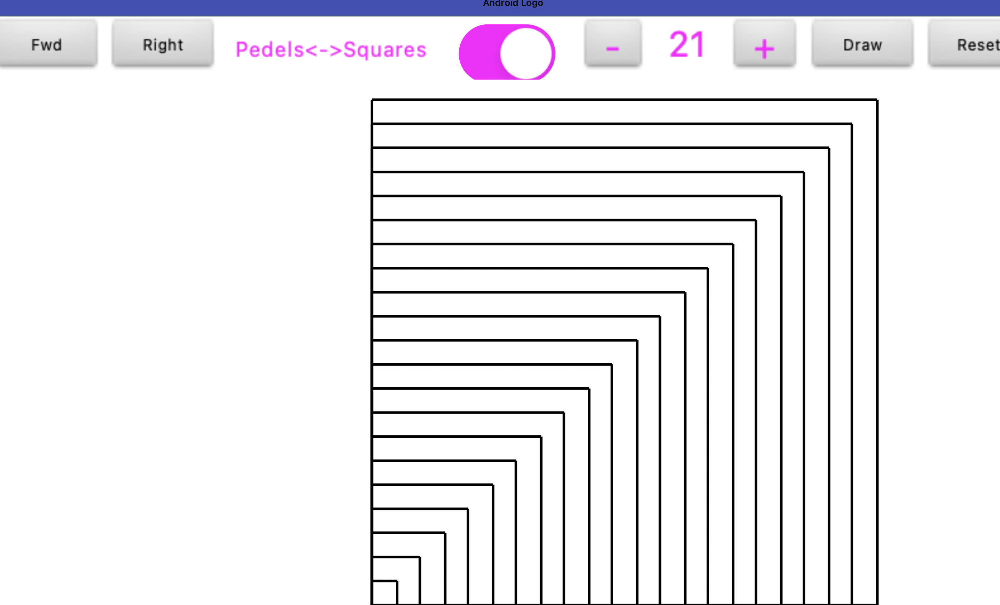
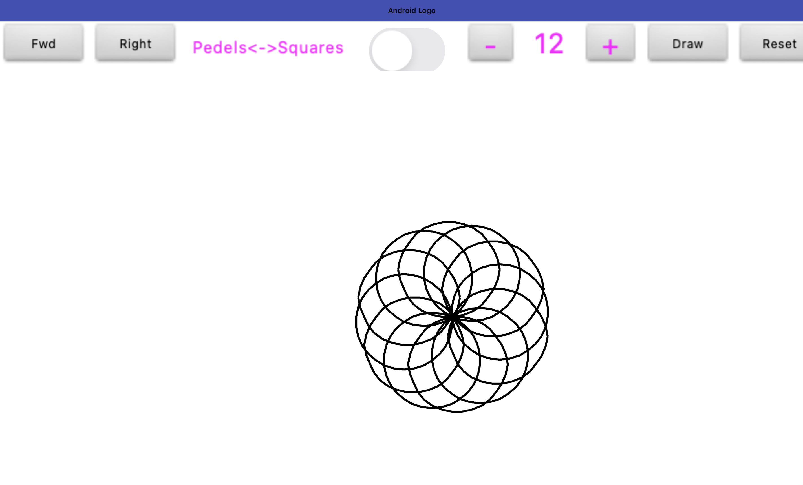
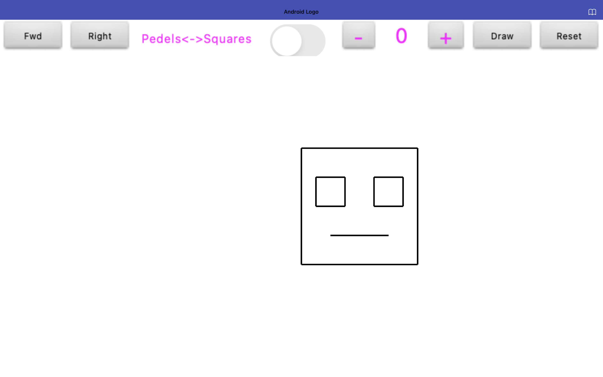

The Concept
In this project, I explored how Loops can be used to generate repetitive patterns and shapes. Instead of drawing every single line manually, I used logic to automate the process, allowing for precise control over spacing and quantity.

Iterative Square Growth

Geometric Spiral Logic

The Final "Loop" Face
Technical Skills Learned
- For-Each Loops: Automating drawing steps to save time and code space.
- Incremental Logic: Changing coordinates or angles slightly with each pass of the loop.
- UI/UX Design: Creating an interface to toggle between different drawing modes.